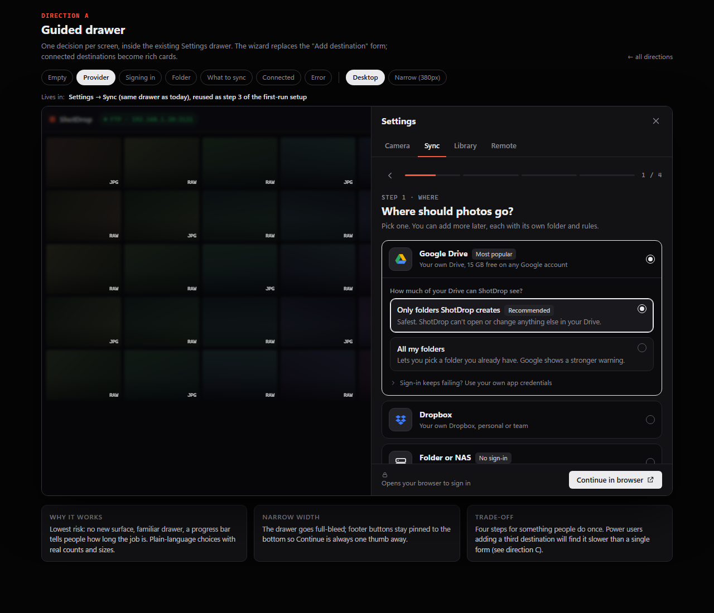
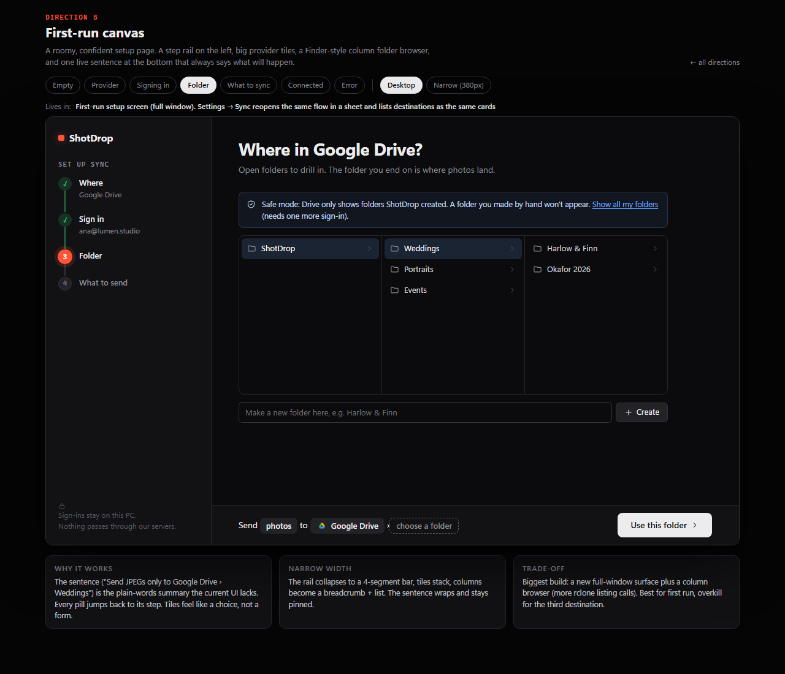
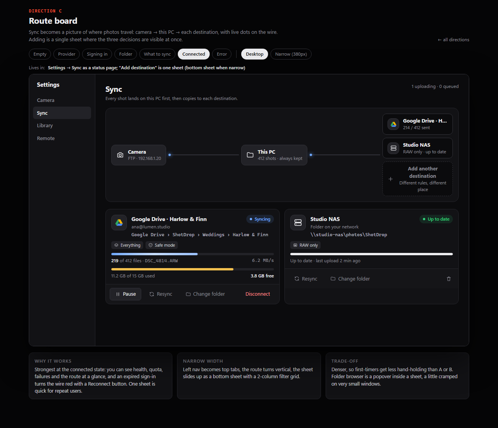

Mockups only (scratch references, not app code). Dark neutral chrome from styles.css tokens. Each file is self-contained and clickable: pick any step from the chips at the top, flip to a 380px window, try the Disconnect confirm, pause, and the expired-sign-in error with Reconnect. Provider logos are simplified stand-ins; use the official brand assets when building.
confirm().
A four-step wizard inside the existing Settings drawer. One decision per screen, progress bar, rich destination cards.

A full-window setup page: step rail, big provider tiles, column folder browser, and a live sentence ("Send JPEGs only to Google Drive › Weddings").

Sync becomes a live picture of camera → this PC → destinations. Add is one sheet with all three decisions visible.
| A · Guided drawer | B · First-run canvas | C · Route board | |
|---|---|---|---|
| Where it lives | Settings → Sync; same wizard as step 3 of first run | First-run setup (full window); sheet from Settings | Settings → Sync page; add sheet |
| First-timer | Excellent: one choice per screen | Excellent and most inviting | Good: three sections at once |
| Repeat user | Slow: four screens each time | Slow, heavy | Fast: one sheet |
| Connected state | Rich cards (email, quota, progress, errors) | Same cards after a "you're set" screen | Cards plus a route diagram showing health at a glance |
| Narrow width | Drawer goes full-bleed, pinned footer | Rail becomes a 4-segment bar, columns become a list | Vertical route, bottom sheet |
| Build cost | Small: reuses the drawer | Largest: new full-window screen, column browser | Medium: new page layout and sheet |
| Main risk | Feels long for experts | Overkill after first run; two surfaces to maintain | Denser; folder popover cramped at 380px |
Ship C's structure with A's copy, and keep B's live sentence. The Route board is the only direction that fixes the connected state (health, errors, Reconnect, quota), which is where people spend their time. Its single sheet suits the second and third destination. Take A's plain-language filter cards and the Drive access question before sign-in, and B's one-line "Send X to Y" summary (already in C's sheet footer). For first run, don't build B's full-window screen: show C's empty board with its single "Add a destination" button, or later a small first-run step that opens the same sheet.
If you want the smallest first step, A is a safe pass: same drawer, no new surface, and it can later be re-skinned as C's sheet.
invalid_grant) should be mapped to a friendly error.drive.file) is a choice before sign-in, and "Show all my folders" is a re-sign-in.drive.file (docs say best effort); the account row should fall back to the remote name.Open any file with #v=empty|provider|waiting|folder|filter|connected|error and &w=narrow. All screenshots are in shots/.